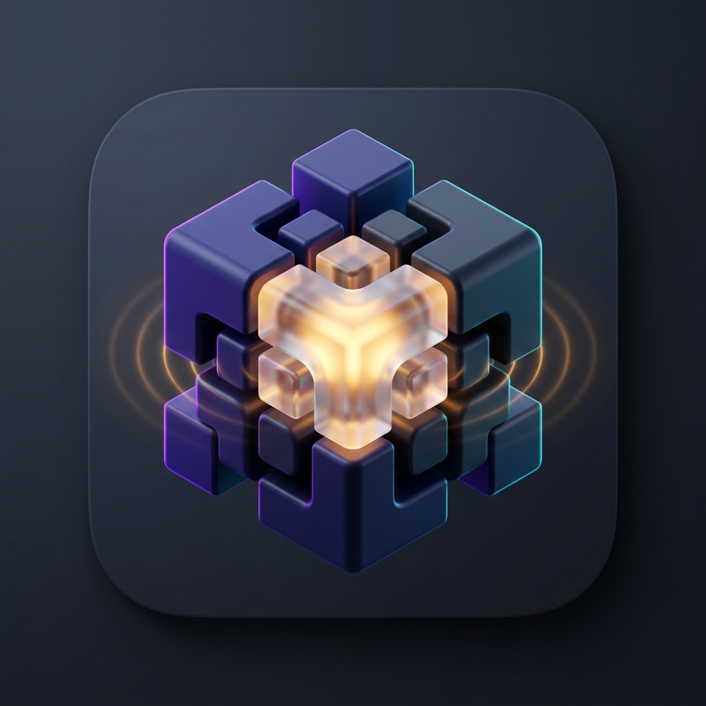

ChunkLab · 🧸 亲子生活英语点读台
44 亲子
v1.2 (最新)
44 亲子高频动作词块 · 万能句型 I want to · 宝宝/妈妈双角色对答
🔄
更新刷新
🌙
夜间模式
A-
标准
A+
⚡
1.0x
👁️
正常
⭐
生词本
🌟 日常生存与交流
218 词块
🏃 高频动作词
75 动词
💭 状态与感受
15 状态
🧸 亲子生活英语
44 亲子
🔍
×
🔊
Ready
点读音频已就绪
⏮
▶ 播放
⏭
🔁 单曲循环
✕